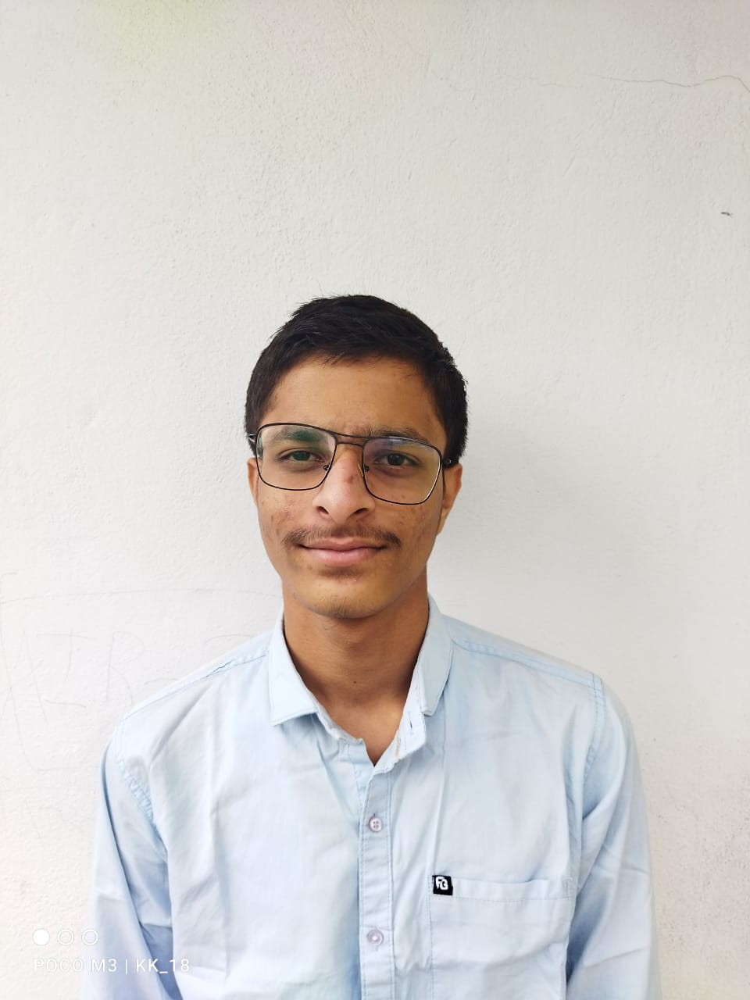
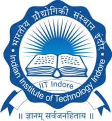

Hi,My name is Kartikey
and I am a Passionate

Virtual Internships and Bootcamps

Web Developement IIT Indore Bootcamp
june(2023)
It was a 10 days Web Developement Bootcamp at IIT Indore Campus in which i have Developed Skills in HTML,CSS and Javascript along with the Django Framework in the Backend Section.

Python development Codsoft internship
june(2024)
It was a 1 month virtual internship program in which i have developed skills in python programming and made Projects on random password generator,arithmetic calculator and rock,paper and scissor game.
.jpg)
Oasis infobyte Frontend Designing
july(2024)
It is a 1 month virtual internship program in which I have developed skills in fronted web development and made hands on projects on a landing page,personal porfolio Website and a temperature converter Website.

Robottron techfest, IIT Bombay
January(2020)
It was a National level Robottron Championship Organized by Abhyuday IIT bombay and our project was the Line Follower Robotic car.

C++ Learner
August-December(2023)
I was a C++ learner in 2023 my first year of college and i have learnt and developed practical skills in Basics C++,Data Structures and Object Oriented Programming.